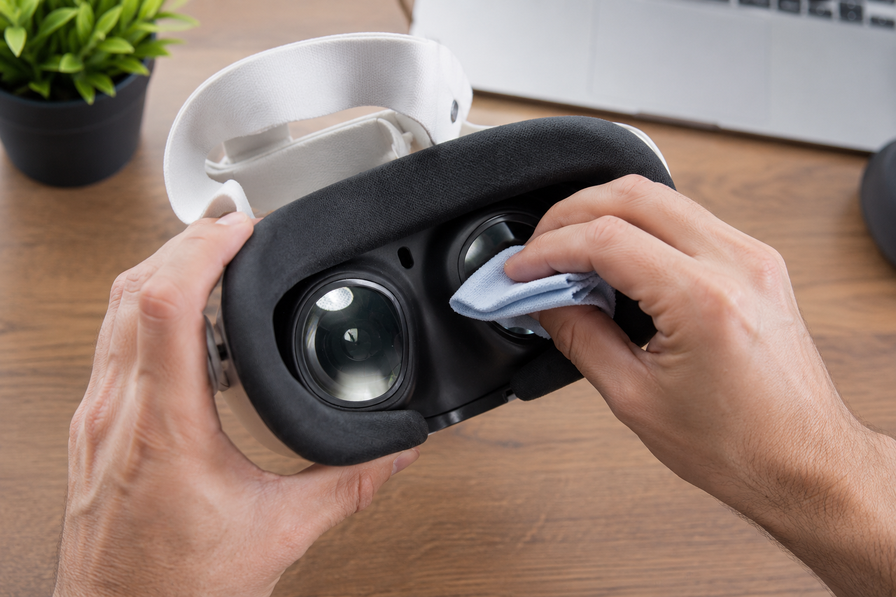

Cómo limpiar las lentes de las Quest 3 sin arruinarlas

Antes de hablar de paños y técnica, esto es lo más importante que tenés que saber sobre las lentes de tus Quest 3, y la mayoría de los dueños ni se entera: la forma más rápida de arruinarlas no es el polvo ni el limpiador equivocado. Es el sol. Las lentes pancake funcionan como una lupa, y si les pega el sol directo —por una ventana, en el auto, al aire libre entre partida y partida— concentran esa luz sobre las pantallas y queman puntos muertos permanentes en la imagen. Eso no lo arregla ninguna limpieza. Así que la regla número uno no tiene nada que ver con limpiar: nunca dejes el visor donde el sol pueda llegar a las lentes. Guardalo con una tapa de lentes puesta, en su estuche, o al menos en algún lugar donde las lentes nunca queden mirando a una ventana. Con eso resuelto, lo demás es fácil.
Para la limpieza en sí, el método es sorprendentemente simple, y la recomendación oficial de Meta es tajante sobre lo que no hay que hacer. Usá un paño de microfibra seco, de grado óptico, del tipo que viene con los anteojos o con las cámaras. Pasalo suave en pequeños círculos, empezando por el centro de la lente y yendo hacia afuera. Listo. Eso saca las huellas, las marcas de pestañas y el polvo que se juntan con el uso.
Lo que nunca tenés que hacer es igual de importante. Nada de alcohol. Nada de limpiavidrios. Nada de spray para lentes. Nada de papel de cocina ni pañuelos descartables. Las lentes de las Quest 3 tienen un recubrimiento óptico delicado, y cualquiera de esas cosas lo raya o lo arranca para siempre; y a diferencia de la pantalla de un celular, estas lentes no son algo que cambies fácil. El "limpiador de lentes" que va bien para tus anteojos es justo lo que arruina un visor de VR.
Para una mancha grasosa rebelde que el paño seco no levanta, aguantá las ganas de mojarlo. El truco seguro es echarle el aliento a la lente —esa mínima condensación— y después pasar la microfibra seca. Si querés ir un paso más allá, Meta dice que podés humedecer apenas una esquina del paño con un poco de agua, nunca aplicada directo a la lente, y mantené toda la humedad lejos de las juntas, los puertos y los sensores. Y antes de cualquier pasada, sacá primero el polvo suelto con un soplido suave: arrastrar tierra sobre la lente es justo lo que la raya.
La interfaz facial de espuma, la que va contra la cara, absorbe sudor y grasa, así que pide su propio cuidado. Sacala (apretá los botones de ajuste y tirá con suavidad), pasale la microfibra, y para una limpieza más a fondo lavá a mano la parte removible con agua fría y un jabón suave, enjuagala bien y dejala secar al aire por completo antes de volver a encastrarla; nunca sumerjas el visor en sí, y acá tampoco va el alcohol. Si compartís el visor o transpirás en partidas intensas, vale la pena una interfaz facial de silicona: se limpia en segundos y no chupa el sudor como la espuma.
El secreto de verdad es el hábito. Agarrá el visor del marco, no de las lentes; dales una pasada rápida en seco después de cada sesión, antes de que la mugre se asiente; y guardalo lejos de la luz. Si hacés eso, tus Quest 3 van a ver como a través de un vidrio limpio durante años. ¿No tenés claro si las Quest 3 son siquiera el visor que te conviene? Nuestra guía Quest 3 vs Quest 3S y el quiz te lo resuelven.
Equipo recomendado
Paño de microfibra → Tapa de lentes → Interfaz facial de silicona (AMVR) →
Respondé 7 preguntas rápidas y obtené una recomendación personalizada en 60 segundos.
Hacer el test de VR Finder →Esta guía contiene enlaces de afiliado. Si comprás a través de ellos podemos ganar una comisión sin costo adicional para vos, lo que ayuda a mantener vr.ar gratis. Como Afiliado de Amazon, vr.ar gana con las compras que cumplen los requisitos. Los precios y las especificaciones pueden cambiar. Consultá nuestra Política de privacidad.